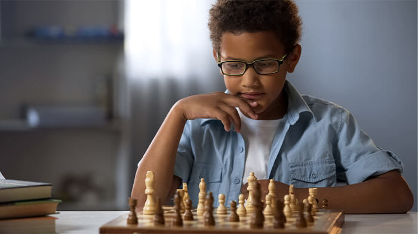
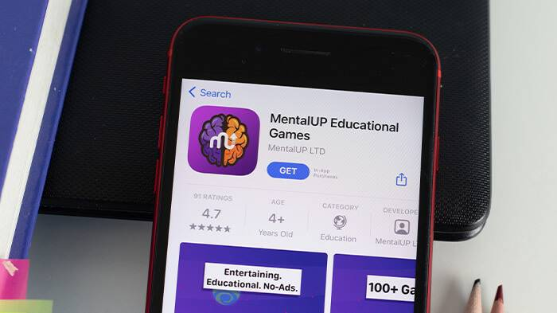
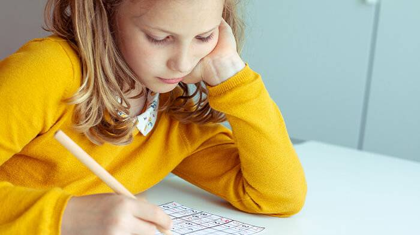
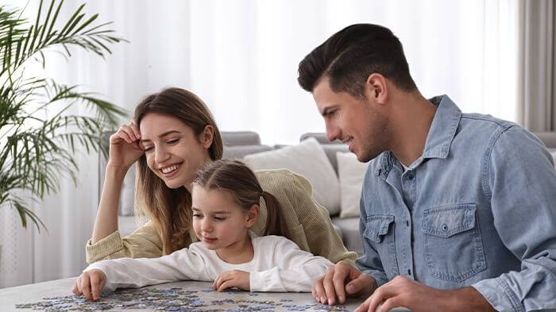

Free Concentration Games & Exercises
Concentration Games For Kids
Concentration Games For Adults
Free Games to Improve Memory and Concentration
Signs of Low Concentration
- Getting distracted often because of external factors
- Feeling nervous and stressed when sitting still
- Being overwhelmed easily and losing interest
- Daydreaming when it is time for daily chores, work, or study
- Having difficulties remembering and learn
Lots of reasons can cause you to have low concentration. When you see the signs of it, you should take precautions. Thanks to games that improve concentration and focus, both you and your kids can start to be more concentrated. 👏
MentalUP is here for you with its hundreds of brain games to improve concentration. You can also look at its attention games for more free attention and concentration games. Don’t waste any time, and get rid of your focus problems! 🌈
Top 5 Exercises & Games to Improve Focus and Concentration
Concentration games like brain words games, memory matching games, board games, puzzles, and card games help improve attention span, focus, and concentration skills.
We’ve compiled a list of the top five exercises and games to improve focus and concentration. Let’s discover them together.
1. Chess
Games for focus and concentration, such as chess, are one of the best ways to improve yourself. This game is also very beneficial for logic, memory, and math skills.

You can easily develop your critical-thinking and problem-solving skills if you play chess regularly. Also, chess is a suitable game you can play with your children. When you want to spend quality time with your kids or friends, you can prefer chess.
It is known that chess trains your brain’s both sides. So, you can use it as a right and left brain development method. Don’t forget that chess will be a helpful boosting game for your children during their development process. Buy a chess set and start to play.
2. MentalUP Concentration Games Online
Brain games for concentration are among the most popular exercises to improve your focus. Because there are lots of options you can try, you can have fun and develop at the same time.

But when you choose brain concentration games, you need to be careful and prefer the most suitable alternatives. It is important to play effective focus and concentration games that are appropriate for your age group.
Moreover, when you provide online concentration games for your kids, you should be sure that it is a safe source. Multi-awarded app MentalUP might be the perfect companion with its no-ads policy in this process.
MentalUP educational games app is a participant of the University College London Institute of Education EDUCATE Program. It is suitable for people of all ages. 🏆
It has more than 150+ concentration games online, including concentration hand games, concentration board games, and other concentration game topics.🎈
Join the MentalUP family, which includes 10+ million users, to improve concentration, attention, and focus skills. It is time to improve with entertaining gamified exercises. 👪
3. Sudoku
Sudoku is one of the other favorite games to improve concentration. Because it develops logic, focus, and math skills at the same time, you can use it to train your brain.

Sudoku is suitable for kids, adults, and seniors. The most effective apps to improve math skills for adults and seniors suggest Sudoku as one of the greatest concentration games. When you are solving Sudoku, you have to concentrate on placing numbers in the right order, and it empowers your logical-mathematical intelligence.
If your children have difficulties when focusing for a long period of time and they need a supportive source, you can suggest Sudoku. You can try to solve them together at first for them to get used to easily. It will also increase their success in their school classes.
4. Puzzles
If you need a more fun way to improve your concentration skills, puzzles might be the best exercise for you. It is also a family-friendly activity, so you can solve puzzles with your kids.

Solving puzzles enhance short-term memory, boost logic, train the brain and improve concentration. The more you solve them, the more you develop and enjoy them. Don’t worry about how much time it takes to finish it.
However, sometimes it can be hard for you to solve puzzles together with your children because you don’t have enough time, or kids can be bored easily. In these kinds of situations, online puzzles come to rescue you.
Certified app MentalUP offer you lots of online brain puzzle games, brain puzzles with answers, logic puzzles, and math puzzles that are suitable for people of all ages. 🎮
They are designed by experts to improve your concentration, focus, and attention skills effectively. You can provide them with your children to support their development. 🎓
5. Brain Yoga
Our last exercise on our list is an interesting one: Brain Yoga. This activity can be defined as a challenging brain concentration game that is also among the most effective stretching exercises for kids. You can play it anywhere you are with your kids. Don’t forget that creative activities for kids like this one improve their skills faster.
To play this game, you need to make a fist with your left hand. Then you should extend your pinky finger. After you complete it, you need to make a wist with your right hand and try to extend your thumb.
When you are playing brain yoga, you should alternate your hands by extending the pinky finger of your right fist and the thumb of your left fist. It continues like that. This game needs strong coordination, so doing coordination exercises is highly recommended before playing it.
Almost all the children like to play these kinds of games. You can try to play brain yoga instead of rock-paper-scissors. This way, you can develop your concentration significantly and help your kids to improve their focus.
Frequently Asked Questions
How do video games improve attention and concentration?
Thanks to fun video games that require you to concentrate, you can improve your attention and concentration skills. Because they train your brain’s both sides at the same time.
What kinds of games practice concentration?
There are lots of games to improve concentration and focus. You can prefer online alternatives or try to play board games. But it is important to choose them according to age and level.
How can games improve your concentration?
When you are playing concentration improving games, you need to multitask and adapt to new environments. Also, they train your brain when you focus on them. This way, you can improve your concentration with fun games.
How to improve your child's concentration through games?
Children can be distracted easily and feel a lack of interest in hard tasks. They need entertaining sources to improve their cognitive skills, such as concentration, focus, and attention. So, you should provide them with appropriate and safe games o develop.
How to increase focus and concentration when playing games?
If you know suitable games and exercises to increase your focus and concentration, it is easy to develop. You just need to prefer games for concentration improvement according to your field of interest and play them regularly.
MentalUP learning games app provides you a safe environment to develop your memory, logic, concentration, math, and language skills by having fun. 🚀
You can improve your cognitive abilities with just 20-minutes of daily practice. Thanks to MentalUP, you will realize your weak spots and strengthen them. ✨
MentalUP includes 150+ brain-boosting games and 240+ fitness exercises. Don’t forget that you can track yourself with its detailed skill analysis reports. 📝
Trusted by World Leading Communities
We recommend the MentalUP which is developed by academicians and pedagogues and is filled with educational brain teasers.
MentalUP Educational Games will enable your child to use technology in a beneficial way.
MentalUP is an online innovative games resources for teachers and parents.
MentalUP does brain training well. Its games are easy to understand while challenging the skills which they are designed to stretch.
MentalUP is a UK-based award-winning scientific-educational application containing cognitive learning games for K-8 learners.
MentalUP developed by game designers and academics incorporating innovative teaching methods to offer dozens of mind games.
Contents of The Concentratıon (Game) Exercıses
- INCREASING ATTENTION SPAN GAMES.
- SUSTAINING ATTENTION EXERCISES.
- ENTERTAINING CONCENTRATION EXERCISES.
BENEFITS OF MENTALUP
- 20-MINUTES DAILY BRAIN EXERCISES.
- PREVENT DISTRACTIBILITY AND LOSS OF CONCENTRATION.
- SUCCESS AT SCHOOL AND DURING EXAMS.